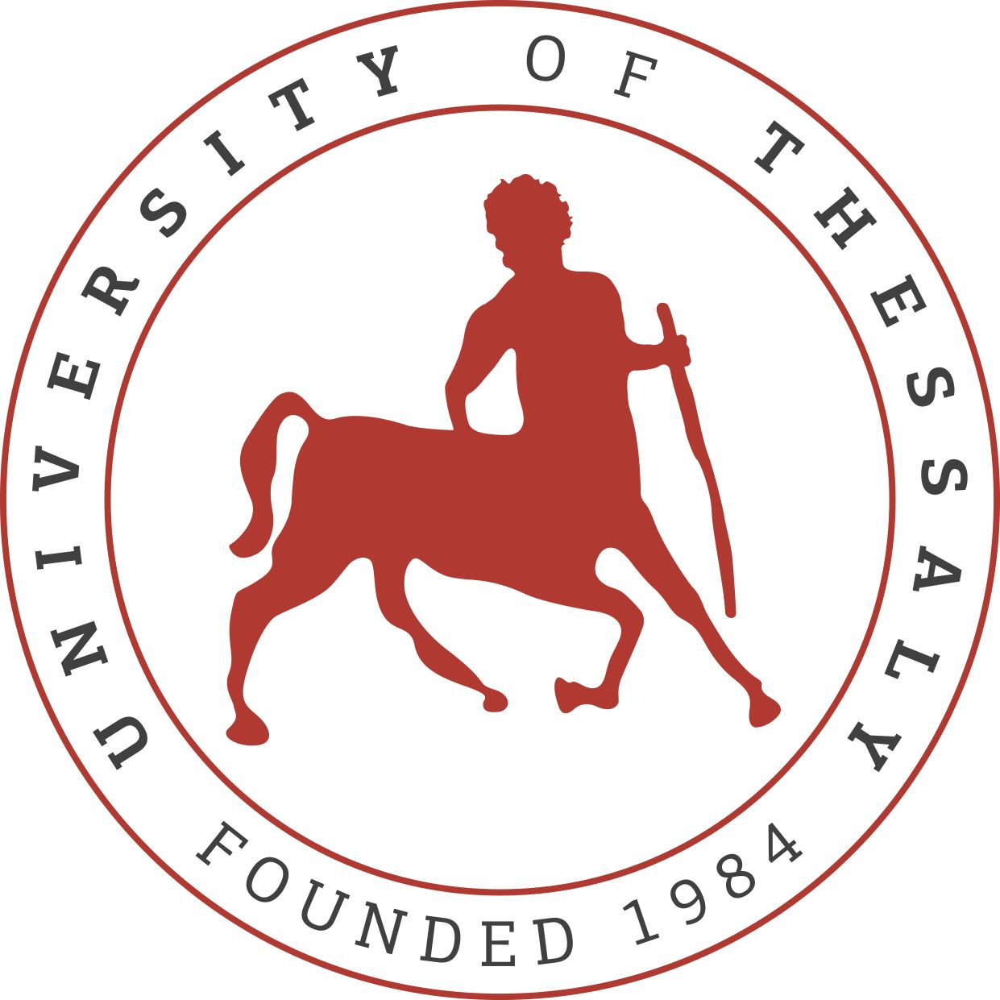

BSc in Physics
National And Kapodistrian University of Athens
Specialising in Nuclear Physics, Dissertation in Film Dosimetry

M.Sc. in Biomedical Imaging and Radiation Protection
University of Thessaly, Department of Medicine
Specialising in fMRI, Dissertation in the Neuroactivity of patients with eating disorders as a response to food and body-shape visual stimuli

Diploma in Software Engineering
Athens University of Economics and Business, "Coding Factory"
Keen interest in Database programming